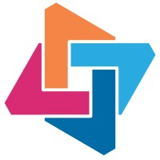
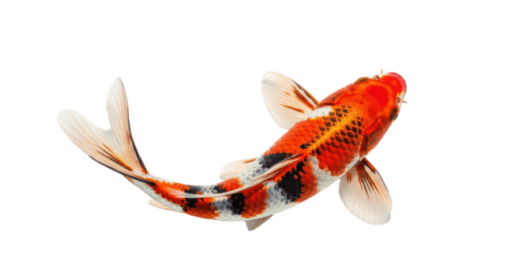

Hi, I'm Catherine. I approach design with business strategy and love turning big ideas into reality.
I came to design from a business background, and I think that makes me a different kind of designer. Where others lead with aesthetics, I lead with strategy. I'm drawn to the intersection of psychology, data, and simplicity: taking what's complex and making it feel effortless. With experience across end-to-end product design and AI workflows, I bring a bigger-picture perspective to every problem I work on.

Catherine Lin 林美幸
Pivoting from Business to UX and Beyond
I started my career in Marketing, but I kept finding myself more interested in improving the product than promoting it. UX gave me that: the ability to identify real problems and design solutions that actually make things simpler and better. Moving to Vancouver was part of that same drive to keep pushing forward. Three years later, I'm still asking how things can be better.

With a passion for innovation and entrepreneurship, I completed my B.Comm at McMaster with an internship at Volvo Cars Canada, leading a team of 40+ students in a national business competition along the way.

I love to challenge myself to get out of my comfort zone. After graduation, I moved to Vancouver to try out life on the West Coast! Three years later, I am still in awe of the beautiful water and mountains every time I go outside.

After studying UX design at BCIT, I had the amazing opportunity to work at SAP on the Data & Analytics team. I learned so much about product design and worked with incredible collaborators to create intuitive ways to visualize data on mobile.

Travel has a special place in my heart. Most recently, I traveled to Japan and Taiwan. What I love the most about traveling is feeling transported to an entirely different world: new food, cultures, and ways of life.
Where I've Worked
UX Designer — SAP
May 2025 – May 2026
Designed mobile interactions for an iOS data analytics app and components for a cross-product design system.

UX Designer — Raisonance
June 2023 – April 2025
Sole UX designer leading end-to-end product design for a healthcare mobile app.
Digital Experience Designer — Volvo Cars Canada
July 2020 – May 2021
Managed digital campaign assets and standardized visual identity across 36+ retailers.
"A great user experience should feel like a zen garden — calm, intentional, and effortless."

Let's Work Together
I'm currently open to new opportunities. If you're looking for a designer who brings both strategic thinking and craft to the table, I'd love to connect.